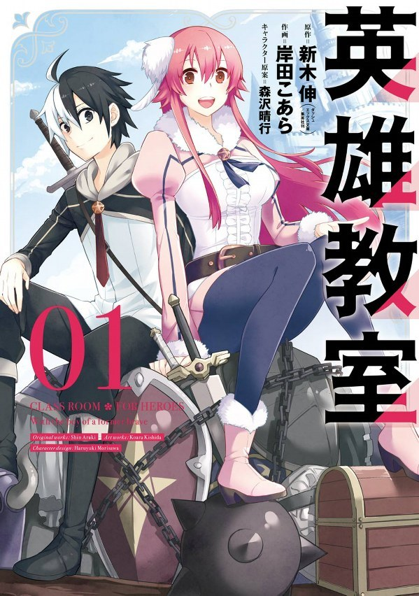

Foreign Languages:
This is the first hobby I got, it was when I was 3 to 6 years old when I played Rockman Zero 3 in Japanese.
I couldn't understand but still play it. Then discovered English while browsing Youtube. I mainly use this for
translation for now since I don't have a job for translate stuff. You can check how much I speak for languages
at my skill page
Anime:
Discovered when I was 2 years old around. I discovered with Doraemon and Meitantei Conan
Then started to watch Chinese Animation too and dual Chinese and Japanese Dub with Tokyo Mew Mew
You can check MyAnimeList Here
Here are the anime I discovered:
Here are the anime I loved of all time
Manga:
I discovered Manga at 8-9 years old with the manga FullMetal Alchemist but not at the beginning I got the 2nd and 3rd volume first but I disocered many others
Here is the manga I discovered:
Here are my favorite manga so far:

Light Novel:
I discovered Light Novel pretty late it was when I was 13 years old but
I discovered when I was buying book for my Japanese Lesson
My First Light Novel was Sword Art Online Phantom Bullet in Japanese
Here is the Light Novel I discovered:
Here are my favorite Light Novel so far:

I mostly play on portable console games, here are those I played:
Gameboy Advance
Nintendo DS Lite
Nintendo 3DS
Nintendo Switch